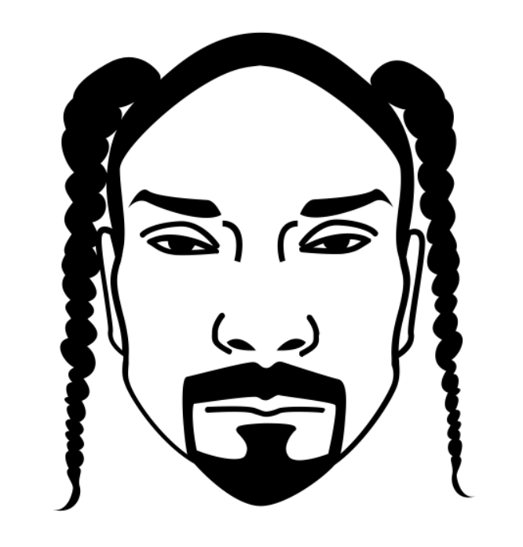

Rap game rap game rap game rap game rap game rap game rap game rap game rap game rap game rap game rap game rap game rap game rap game rap game rap game rap game rap game rap game
| Isha, anciennement Psmaker, est un rappeur bruxellois actif depuis les années 2000, né le 2 juin 1986 à Woluwe-Saint-Lambert. Après un long silence, il revient en 2016 avec Passage à niveaux #1 annonçant son projet : La vie augmente Vol.1, sorti le 21 avril 2017. La volume 2 est actuellement en préparation. | ||
| Né à Uccle le 13 décembre 1992, Roméo Elvis est un rappeur belge originaire de Bruxelles, proche des membres de L'Or Du Commun. Issu d'une famille d'artistes, sa mère Laurence Bibot, comédienne, et son père Marka, chanteur, il a grandi dans le sud de la capitale belge, à Linkebeek, ville à laquelle il fait de nombreuses fois références dans ses textes. | ||
|  | Jok'Air, de son vrai nom Melvin Félix, est un rappeur parisien du 13ème arrondissement, anciennement membre du groupe la MZ, avant leur séparation en fin d'année 2016. Il démarre sa carrière solo le 20 janvier 2017 en sortant le morceau “C'est la guerre”, extrait de son premier projet et EP Big Daddy Jok sorti un mois plus tard le 24 février 2017. |